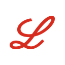

LLYNYSE · Eli Lilly and CompanyCifras fundamentales: SEC EDGAR (10-Q del trimestre cerrado el 30 de septiembre de 2026, presentado el 29 de octubre de 2026; 10-K del ejercicio 2025, presentado el 12 de febrero de 2026; XBRL companyfacts) y comunicado de resultados del 29 de octubre de 2026 (8-K). Precio de mercado: cierre del 12 de noviembre de 2026 (Yahoo Finance). Consenso: Nasdaq y stockanalysis.com, 12-nov-2026. "TTM" = últimos doce meses (4T2025 a 3T2026). "Mil millones" = billion de EE.UU. Este documento es 100% analítico — no constituye una recomendación de compra, venta ni mantenimiento. Ver disclosure completo al pie.
01 — Resumen Ejecutivo
Eli Lilly cerró el tercer trimestre de 2026 (trimestre cerrado el 30 de septiembre, publicado el 29 de octubre) con ingresos de $24,397 millones, un aumento de 38.6% interanual. El crecimiento volvió a venir de la tirzepatida: Mounjaro facturó $10,723 millones (+65%) y Zepbound $5,352 millones (+49%). Entre las dos marcas sumaron $16,075 millones, 65.9% de los ingresos del trimestre. La utilidad por acción fue de $7.22 (GAAP) y $7.48 (no-GAAP), las dos después de absorber $4.57 por acción de cargos por investigación y desarrollo adquirida (IPR&D), sobre todo por las compras de AtaiBeckley y Curevo. Sin esos cargos, el EPS no-GAAP habría sido de $12.05. La compañía subió la guía de ingresos 2026 a $91-92 mil millones (desde $85-87) y la de margen de desempeño a 52.0%-52.5% (desde 49.0%-50.5%).
Tres datos del trimestre definen esta actualización. Primero, el crecimiento es casi todo volumen: el volumen subió 53% y el precio realizado cayó 15%; en EE.UU. el precio cayó 7%, y 10% sin los ajustes favorables de descuentos de períodos anteriores. Segundo, unos $900 millones del trimestre son extraordinarios (hitos de venta de Jardiance por $410 millones, que ya no quedan por cobrar, y ajustes de descuentos), y la compañía calcula unos $2,000 millones de este tipo en todo 2026 que no se repetirán en 2027. Tercero, Foundayo, la pastilla de Lilly para bajar de peso, facturó $184 millones, todavía muy por debajo de la pastilla Wegovy de Novo Nordisk (unos $810 millones en el mismo trimestre).
La valuación sube por esos datos. La suma de partes producto por producto hasta la pérdida de exclusividad (LOE) pasa de $386.44 a $481.04 por acción: la tirzepatida se ancla ahora en el consenso de ingresos de 2027 (que subió 12.9% desde septiembre), el margen de contribución en los nueve meses de 2026 y en la guía de margen, y se suman dos activos de fase 3. Los comparables contra el sector dan $878.49 (desde $750.91), la reversión al propio múltiplo de Lilly $1,197.89 y el consenso de analistas $1,515.22. El blend ponderado queda en $1,089.85, $103.82 más que en septiembre. Prácticamente todo ese aumento viene del modelo (+$104.04); el precio de mercado solo mueve el blend a través del peso de la deuda en el WACC (−$0.22).
El precio, en cambio, subió 24.0%, de $1,150.99 a $1,427.28 (la acción saltó 10.0% en las dos ruedas posteriores al reporte). El blend queda 23.6% por debajo del mercado, contra 14.3% en septiembre. La postura sigue siendo neutral con sesgo bajista: el negocio no muestra ningún deterioro —volumen +53%, guía subida tres veces, estimados en alza—, pero todo lo que este informe puede medir sin mirar el precio queda muy por debajo de él, y ahora también la reversión a su propio historial ($1,197.89) queda debajo. Solo el consenso de analistas ($1,515.22) supera el precio.
02 — Historia y Evolución
El coronel Eli Lilly, químico farmacéutico y veterano de la guerra civil estadounidense, fundó la compañía en Indianápolis en 1876. El primer gran hito llegó en 1923, cuando Lilly se convirtió en la primera empresa en producir insulina a escala comercial en colaboración con los investigadores de la Universidad de Toronto que la habían descubierto. La diabetes quedó desde entonces en el centro de la identidad de la compañía, un siglo antes de que la tirzepatida la convirtiera en el negocio más rentable de la industria.
A fines del siglo XX Lilly construyó una cartera diversificada con Prozac (1987, el antidepresivo que definió una categoría), Humalog (1996, la primera insulina análoga de acción rápida), Zyprexa, Cialis y Alimta. La década de 2010 fue de transición: vencieron las patentes de Zyprexa, Cymbalta y Cialis, los ingresos se estancaron cerca de los $20-22 mil millones y el crecimiento dependió de Trulicity (2014), el agonista del receptor GLP-1 de aplicación semanal que llegó a facturar más de $7 mil millones al año. En 2017 asumió como CEO David Ricks, que reorientó la compañía hacia cinco áreas (diabetes y obesidad, oncología, inmunología, neurociencia y dolor) y escindió la división de salud animal (Elanco, 2018-2019).
El punto de quiebre fue la aprobación de Mounjaro por la FDA en mayo de 2022 y de Zepbound en noviembre de 2023. La tirzepatida es un agonista dual de los receptores GIP y GLP-1 que produjo pérdidas de peso de alrededor de 20% en los ensayos de obesidad, por encima del estándar previo de semaglutida (Ozempic/Wegovy, de Novo Nordisk). La demanda superó la capacidad de producción durante 2023 y 2024, y Lilly respondió con el mayor programa de inversión en plantas de su historia (Sección 07). Los ingresos pasaron de $28.5 mil millones en 2022 a $65.2 mil millones en 2025 y $86.5 mil millones en los últimos doce meses, y la compañía se convirtió, el 21 de noviembre de 2025, en la primera farmacéutica en superar el billón de dólares de capitalización bursátil. En julio de 2024 obtuvo la aprobación de Kisunla (donanemab) para Alzheimer temprano, el 1 de abril de 2026 la de Foundayo (orforglipron), la primera pastilla GLP-1 para bajar de peso que puede tomarse a cualquier hora sin restricciones de comida ni agua, y en el tercer trimestre de 2026 la de Onswik (insulina efsitora alfa), la primera insulina basal de aplicación semanal.
Ingresos anuales de Eli Lilly, en miles de millones de US$ (FY2016-FY2025 y últimos doce meses a septiembre 2026). Fuente: SEC EDGAR XBRL (10-K y 10-Q). El salto a partir de 2023 corresponde a Mounjaro y Zepbound.
03 — Modelo de Negocio, Productos y Patentes
Lilly descubre, desarrolla, fabrica y vende medicamentos de marca protegidos por patentes. El margen bruto de un medicamento patentado es altísimo (83.6% en los últimos doce meses para Lilly) porque el precio no refleja el costo de fabricar la pastilla o la inyección, sino el de los diez a quince años de investigación que la precedieron y el de todos los proyectos que fracasaron en el camino. Esa renta dura mientras dura la exclusividad: cuando la patente vence y entran genéricos (moléculas pequeñas) o biosimilares (biológicos), las ventas del producto original caen fuerte en pocos años. El negocio, entonces, es una carrera permanente por reemplazar los productos que vencen con productos nuevos.
La compañía reporta sus ingresos en cuatro áreas terapéuticas. En los últimos doce meses, salud cardiometabólica (tirzepatida, Foundayo, Trulicity, Jardiance, insulinas) aportó 79.1% de los ingresos; oncología (Verzenio para cáncer de mama, Jaypirca, Inluriyo, Retevmo, Cyramza) 11.6%; inmunología (Taltz, Ebglyss, Omvoh, Olumiant) 6.5%; y neurociencia (Kisunla, Emgality) 2.0%. EE.UU. representó 62.0% de los ingresos del último trimestre. Casi toda la venta en EE.UU. pasa por tres mayoristas (McKesson, Cencora y Cardinal Health), y una porción creciente se vende directo al paciente por LillyDirect, la plataforma propia que la compañía usa para Zepbound y Foundayo con pago en efectivo. La compañía no publica qué parte de las ventas pasa por ese canal.
Ingresos por producto, últimos doce meses a septiembre 2026 (miles de millones de US$). Calculado como FY2025 + nueve meses 2026 − nueve meses 2025, con las tablas de desagregación del 10-K 2025 y el 10-Q del 3T2026. La suma reproduce los $86.46 mil millones de ingresos TTM (diferencia de redondeo menor a $5 millones).
El gráfico muestra la concentración que define el caso: Mounjaro ($36.7 mil millones) y Zepbound ($18.7 mil millones) son la misma molécula, y juntos equivalen a 64.1% de los ingresos (65% en los nueve meses de 2026, y 66% si se suma Foundayo, según el 10-Q). El resto de la cartera suma $31.0 mil millones, y $18.2 mil millones (21.0% de los ingresos) están en cuatro productos que pierden exclusividad o entran al régimen de precios negociados de Medicare antes de 2031. La tabla siguiente resume las fechas estimadas de vencimiento que publica la propia compañía en su 10-K y la exposición al programa de negociación de precios de Medicare creado por la Ley de Reducción de la Inflación (IRA).
| Producto | Ingresos TTM | Tipo | Patente compuesto EE.UU. | Europa / Japón | Otros eventos |
|---|---|---|---|---|---|
| Mounjaro / Zepbound (tirzepatida) | $55.44B | Péptido (NDA) | 13-may-2036 | 2037 / 2040 | Patente de sustancia/producto hasta 14-jun-2039 y de uso hasta 2041 (Orange Book); demandas contra los genéricos presentadas en ago-2026 |
| Foundayo (orforglipron) | $281M (9M26) | Molécula pequeña | 26-sep-2037 | n.d. | Exclusividad de nueva entidad química hasta 1-abr-2031 (Orange Book); regalías a Chugai |
| Verzenio (abemaciclib) | $5.89B | Molécula pequeña | 2031 | 2033 / 2034 | Precio negociado IRA desde 1-ene-2028; juicio contra Cipla fijado para mayo de 2028 |
| Jardiance (empagliflozina)* | $4.69B | Molécula pequeña | 2029 | 2029 / 2030 | Colaboración con Boehringer vigente hasta 31-dic-2028; precio IRA desde 2026; sin hitos de venta pendientes |
| Trulicity (dulaglutida) | $4.08B | Biológico | 2027 | 2029 / 2029 | Precio negociado IRA desde 1-ene-2028 |
| Taltz (ixekizumab) | $3.50B | Biológico | 2030 | 2031 / 2030 | — |
| Jaypirca / Ebglyss / Kisunla / Omvoh / Inluriyo | ≈$3.24B* | Mixto | 2035-2039 | 2033-2040 | Lanzamientos recientes: +100% interanual en el 3T26 |
Fuente: 10-K 2025 de Eli Lilly, sección "Patents and Intellectual Property" (fechas estimadas de la compañía); FDA Orange Book (archivo de datos al 24-sep-2026) para tirzepatida y Foundayo; 10-Q del 3T2026, Nota 3 (colaboraciones) y Nota 9 (litigios Hatch-Waxman); CMS, listas de medicamentos seleccionados para negociación (Jardiance en el primer ciclo, precio vigente desde 2026; Trulicity y Verzenio en el tercer ciclo, anunciado el 27-ene-2026, precio vigente desde 1-ene-2028). *Jardiance es un producto de Boehringer Ingelheim; Lilly recibe una participación en las ventas, que se reconoce como ingreso de colaboración; los TTM incluyen $910 millones de hitos de venta de 2026. *Lanzamientos recientes: ingresos del 3T2026 anualizados ($810 millones × 4), no TTM, porque son productos en rampa.
Ingresos TTM (miles de millones de US$) de los cinco productos principales, ordenados por año de vencimiento de la patente de compuesto en EE.UU. $18.2 mil millones (21% de los ingresos) pierden exclusividad o entran al régimen de precios negociados de Medicare antes de 2031.
Dos detalles de la tabla importan para la valuación. Primero, la tirzepatida es un péptido sintético aprobado por la vía de medicamentos químicos (NDA), no como biológico: la protección regulatoria de datos en EE.UU. vence en 2027, lo que habilitó a varios fabricantes de genéricos a presentar sus solicitudes (ANDA) en julio de 2026. El 10-Q confirma que en agosto de 2026 Lilly los demandó por infracción de patentes en el tribunal de Delaware, lo que en general activa una suspensión de 30 meses de la aprobación de las copias. El riesgo real no es un genérico en 2027, sino que un tribunal invalide patentes y adelante la fecha de 2036. Segundo, la colaboración con Boehringer Ingelheim por Jardiance en los mercados más importantes termina el 31 de diciembre de 2028, y desde el tercer trimestre de 2026 ya no quedan hitos de venta por cobrar: ese ingreso desaparece en gran parte antes de que venza su patente.
04 — Desarrollos Recientes y Perspectiva
Volumen contra precio. El dato más importante del trimestre sigue siendo la composición del crecimiento. Los ingresos subieron 39%: 53 puntos de volumen y −15 de precio. En EE.UU. (62% de las ventas) el volumen creció 41% y el precio cayó 7%, sobre todo por Zepbound; según el director financiero, sin los ajustes favorables de estimaciones de descuentos (2% de las ventas de EE.UU. en el trimestre, según el 10-Q, mayormente de Mounjaro) la caída habría sido de 10%. Fuera de EE.UU. el volumen creció 76% con precios 29% más bajos, por la inclusión de Mounjaro en la lista nacional de reintegro de China (NRDL). Mounjaro creció 41% en EE.UU. ($4,998 millones) y 93% fuera de EE.UU. ($5,725 millones), donde ya factura más que en su mercado de origen. Zepbound, que se vende casi entero en EE.UU., creció 48% ($5,267 millones). El patrón no cambió desde septiembre: Lilly baja el precio para ampliar el acceso y el volumen compensa con creces. Para 2027 la compañía anticipa lo mismo: el precio neto será "un viento en contra más que compensado por el crecimiento de volumen", según el director financiero.
Ingresos trimestrales totales y de tirzepatida (Mounjaro + Zepbound), en miles de millones de US$ (B), 1T2025 a 3T2026. Los trimestres de 2025 se obtienen restando los datos acumulados publicados en el 10-Q y el 10-K. Fuente: SEC EDGAR.
Descomposición del crecimiento de ingresos del 3T2026 contra el 3T2025, en puntos porcentuales: volumen y precio realizado, en EE.UU., fuera de EE.UU. y consolidado (el efecto cambiario fue nulo en el trimestre). Fuente: 10-Q del 3T2026.
Precio y acceso en EE.UU. Los acuerdos voluntarios de precios firmados con el gobierno federal (precios más bajos en Medicaid y lanzamientos con precios alineados entre países desarrollados) le dan a Lilly, además, la exención de los aranceles de la sección 232 a medicamentos patentados, que desde julio de 2026 son de 100% para quien no tenga un acuerdo; la exención con tasa cero rige hasta el 20 de enero de 2029. El programa "Bridge" de Medicare, vigente desde el 1 de julio de 2026 y hasta el 31 de diciembre de 2027, dio acceso con descuento a Zepbound y Foundayo a unos 20 millones de beneficiarios: según David Ricks, más de medio millón de personas ya retiraron una receta de un medicamento de Lilly y 7 de cada 10 pacientes nuevos del programa eligen uno de Lilly. La cobertura permanente de la obesidad en Medicare todavía no existe: la compañía espera que el programa pase al beneficio de la Parte D, pero eso requiere un cambio legal o regulatorio sin fecha. Es el canal que más volumen suma y el que más baja el precio promedio.
Foundayo (orforglipron). La FDA la aprobó para obesidad el 1 de abril de 2026. Facturó $184 millones en el tercer trimestre (+88% contra los $98 millones del segundo) y la compañía dice que capta cerca de 4 de cada 10 pacientes que empiezan un tratamiento oral para bajar de peso en EE.UU., con más de medio millón de recetas en el trimestre. La comparación con la competencia es menos favorable: Novo Nordisk informó unos $810 millones de ventas de su pastilla Wegovy en el mismo trimestre y dice tener cerca de 80% de las recetas nuevas de pastillas en EE.UU. (las dos compañías miden la participación de forma distinta). Lilly espera la decisión de la FDA para diabetes tipo 2 en el cuarto trimestre de 2026, ya tiene opinión favorable del comité europeo (CHMP) para obesidad y diabetes, la lanzó en cuatro países fuera de EE.UU. y espera el lanzamiento global en todos los mercados grandes en 2027. Este informe mantiene el pico de ventas de $15 mil millones del caso Base: los datos de arranque no alcanzan para subirlo ni para bajarlo.
Retatrutida y pipeline de obesidad. El agonista triple (GIP, GLP-1 y glucagón) sumó en el trimestre el primer ensayo de fase 3 directo contra la competencia: en TRANSCEND-T2D-2, contra la dosis máxima de Ozempic (2 mg), bajó la hemoglobina glicosilada 2.2 puntos contra 1.8 y el peso entre 20% y 21% contra 9.4%. Con TRIUMPH-1 (28.3% de pérdida de peso a 80 semanas), TRIUMPH-2 y TRIUMPH-3 ya publicados, la retatrutida es el activo del pipeline con más datos: la solicitud ante la FDA (BLA) sigue prevista para el primer trimestre de 2027. Lo que todavía es promesa: EloraTZP (eloralintida combinada con tirzepatida), que mostró en fase 2 más pérdida de peso que la tirzepatida sola y empieza la fase 3 en el cuarto trimestre, y la eloralintida sola, que inició tres ensayos de fase 3 (obesidad, apnea del sueño y dolor por artrosis).
Alzheimer y el resto de los lanzamientos. Kisunla (donanemab) facturó $193 millones en el trimestre, 175% más que un año antes, con la ayuda de los análisis de sangre P-tau217 que simplifican el diagnóstico. Junto con Jaypirca, Ebglyss, Omvoh e Inluriyo, los lanzamientos fuera de la obesidad sumaron $810 millones y duplicaron las ventas de un año antes. Son productos con datos de ventas reales, pero todavía chicos: anualizados, equivalen a menos del 4% de los ingresos.
Compras y plantas. En los nueve meses de 2026 Lilly pagó 18.2 mil millones por compras de compañías y de pipeline (Centessa, Kelonia, AtaiBeckley, Orna, Ventyx, Curevo y Ajax). En el tercer trimestre reconoció $4,181 millones de IPR&D adquirida, sobre todo por AtaiBeckley ($2,610 millones, un tratamiento de fase 2 para depresión resistente) y Curevo ($954 millones, una vacuna de fase 2 contra el herpes zóster). Después del cierre compró Merida Biosciences por hasta $2.9 mil millones. En plantas, empezó a construir dos fábricas nuevas en EE.UU.: Houston ($6.5 mil millones) y Richmond ($5 mil millones).
Competencia. Novo Nordisk mejoró por tercera vez su guía 2026 gracias a la pastilla Wegovy, aunque sus ventas de Wegovy inyectable en EE.UU. cayeron 13%, y prepara el lanzamiento de CagriSema en EE.UU. para principios de 2027, sujeto a aprobación. Fuera de EE.UU. la semaglutida ya tiene genéricos: venció la patente en India (marzo de 2026, con más de diez fabricantes y precios hasta 35 veces más bajos) y Canadá aprobó las primeras copias en abril y mayo; en Brasil el primer genérico se registró en agosto. En EE.UU. la competencia de los productos compuestos sigue: el 10-Q menciona la producción masiva de incretinas compuestas, falsificadas o adulteradas como un riesgo vigente. Amgen (MariTide) y Pfizer (activos de Metsera) siguen sin un producto aprobado en obesidad.
05 — Estados Financieros
| US$ millones | 3T2026 | 3T2025 | Var. | TTM |
|---|---|---|---|---|
| Ingresos | 24,397 | 17,601 | +38.6% | 86,462 |
| Costo de ventas | 3,933 | 3,008 | +30.8% | 14,150 |
| Margen bruto (GAAP) | 83.9% | 82.9% | +1.0 pp | 83.6% |
| Investigación y desarrollo (sin IPR&D adquirida) | 4,247 | 3,466 | +22.5% | 15,377 |
| Marketing, ventas y administración | 3,125 | 2,741 | +14.0% | 12,620 |
| IPR&D adquirida | 4,181 | 656 | n.s. | 8,070 |
| Utilidad operativa | 8,608 | 7,365 | +16.9% | — |
| Utilidad neta | 6,451 | 5,583 | +15.5% | 27,580 |
| EPS diluido GAAP | $7.22 | $6.21 | +16.3% | $30.81 |
| EPS no-GAAP | $7.48 | $7.02 | +6.6% | $31.96 |
Fuente: comunicado de resultados del 3T2026 (8-K del 29-oct-2026), 10-Q del 3T2026 y SEC EDGAR XBRL. TTM = 4T2025 (año 2025 del 10-K menos nueve meses de 2025) + nueve meses de 2026. EPS no-GAAP trimestral: $7.54 (4T25), $8.56 (1T26), $8.38 (2T26), $7.48 (3T26). EPS GAAP del 4T25: $7.39. La utilidad operativa TTM no se informa porque la compañía no publica esa línea en XBRL y los cargos especiales no están desagregados en el mismo formato en todos los trimestres.
Tres lecturas de la tabla. Primero, el margen bruto subió 1.0 punto pese a la caída de precios, por menores costos de producción y una mezcla más cargada de tirzepatida (84.4% no-GAAP, sin la amortización de intangibles). Segundo, la I+D creció 23%, más rápido que en septiembre (+14.5%), y quedó en 17.4% de las ventas del trimestre: $2,584 millones fueron a ensayos de fase 3 y $1,663 millones a etapas tempranas, con el aporte de los programas comprados. El marketing creció 14%, menos que los ingresos, a pesar de los lanzamientos. Tercero, la IPR&D adquirida volvió a ser la partida que más distorsiona el EPS: Lilly no la excluye de su EPS no-GAAP, y los $7.48 del trimestre ya incluyen $4.57 por acción de esos cargos. Por eso el EPS no-GAAP creció apenas 6.6% con ingresos +39%.
Margen bruto GAAP y margen de desempeño calculado (margen bruto − I+D − marketing, ventas y administración, sobre ingresos), por trimestre, en %. La definición es la que usa la compañía para su guía ("performance margin"), aplicada acá sobre cifras GAAP. Fuente: SEC EDGAR XBRL, cálculo propio.
El margen de desempeño calculado fue de 53.7% en el tercer trimestre, después del 54.2% del segundo. La guía de la compañía para todo 2026 subió a 52.0%-52.5% (sobre base no-GAAP), desde 49.0%-50.5% en agosto: 2.5 puntos más en el punto medio. Ese salto es el dato que este informe traslada a la valuación: el margen de contribución de la Sección 13 apunta en 2030 a 57.5%, 2.5 puntos más que en septiembre.
06 — Balance, Deuda y Capacidad de Compra
| US$ millones | 30-sep-2026 | 31-dic-2025 | 31-dic-2024 |
|---|---|---|---|
| Caja y equivalentes | 4,885 | 7,268 | 3,268 |
| Deuda de corto plazo | 2,517 | 1,635 | 5,117 |
| Deuda de largo plazo | 46,986 | 40,868 | 28,527 |
| Deuda neta | 44,618 | 35,235 | 30,376 |
| Inventarios | 18,194 | 13,744 | 7,589 |
| Goodwill + intangibles | 27,958 | 12,419 | 11,936 |
| Patrimonio neto | 40,271 | 26,535 | 14,272 |
| Activos totales | 148,072 | 112,476 | 78,715 |
Fuente: SEC EDGAR XBRL (10-Q 3T2026 y 10-K 2025). Deuda de corto plazo = préstamos de corto plazo y vencimientos corrientes de deuda de largo plazo; deuda de largo plazo = porción no corriente (las dos líneas no se superponen: suman los $49.5 mil millones de deuda total que informa el 10-Q). Deuda neta = deuda total − caja y equivalentes (no descuenta los $4.1 mil millones de inversiones, que la compañía mantiene por fuera de la caja).
La deuda neta subió $9.4 mil millones en los nueve meses de 2026, a $44.6 mil millones, aunque bajó contra junio ($46.0 mil millones) porque el flujo operativo del tercer trimestre ($11,397 millones) cubrió con holgura el capex y las compras del período. Los usos del año fueron concretos: $8,437 millones de inversión en plantas y 18.2 mil millones de pagos por compras de compañías y de pipeline. En mayo Lilly colocó $9.0 mil millones en bonos con vencimientos entre 2028 y 2066 y renovó sus líneas de crédito ($10.0 mil millones sin usar). Contra una utilidad antes de intereses, impuestos, depreciaciones y amortizaciones (EBITDA) de alrededor de $38.2 mil millones en los últimos doce meses (utilidad antes de impuestos + depreciación y amortización + intereses pagados, estimación propia), la deuda neta equivale a unas 1.17 veces, un nivel bajo para una farmacéutica de este tamaño.
En pharma, la capacidad de compra ("firepower") es parte del análisis de balance porque las adquisiciones son la forma principal de llenar el hueco que dejan las patentes que vencen. Con una deuda neta de 1.17 veces el EBITDA, Lilly podría sumar del orden de $50-70 mil millones de deuda (hasta unas 2.5-3 veces, rango en el que se mueven otras farmacéuticas grandes después de compras importantes) sin salir del grado de inversión. Es una estimación propia y aproximada, no una cifra de la compañía. El inventario de $18,194 millones (+32% en nueve meses, 59% de él producto en proceso) refleja la acumulación para Foundayo y la futura retatrutida. Un dato del capital de trabajo que importa para la Sección 13: el pasivo por descuentos y reintegros a pagar subió de $17,382 a $24,170 millones en nueve meses, lo que infló el flujo operativo del período.
07 — Flujo de Caja y Asignación de Capital
| US$ millones | 2022 | 2023 | 2024 | 2025 | TTM |
|---|---|---|---|---|---|
| Flujo operativo (OCF) | 7,586 | 4,240 | 8,818 | 16,813 | 30,645 |
| Inversión en plantas y equipos (capex) | 1,854 | 3,448 | 5,058 | 7,841 | 10,984 |
| Flujo de caja libre (FCF) | 5,732 | 792 | 3,760 | 8,972 | 19,661 |
| Dividendos pagados | 3,536 | 4,069 | 4,680 | 5,384 | 5,980 |
| Recompras de acciones | 1,500 | 750 | 2,500 | 4,108 | 5,842 |
| Margen de OCF / margen de FCF | 26.6% / 20.1% | 12.4% / 2.3% | 19.6% / 8.3% | 25.8% / 13.8% | 35.4% / 22.7% |
Fuente: SEC EDGAR XBRL (estado de flujo de efectivo; capex = "PaymentsToAcquireOtherPropertyPlantAndEquipment"). TTM = FY2025 − nueve meses 2025 + nueve meses 2026. Las compras de compañías y de IPR&D se registran como actividades de inversión y no están restadas en el FCF de esta tabla.
Flujo operativo, capex y flujo de caja libre anuales (miles de millones de US$), 2021-2025 y TTM a septiembre 2026 (valores exactos en la tabla de arriba). Fuente: SEC EDGAR XBRL.
El capex se multiplicó por casi seis en cuatro años, de $1.85 mil millones en 2022 a $10.98 mil millones en los últimos doce meses (12.7% de los ingresos, contra 3%-6% habitual en la pharma grande), y en el tercer trimestre fue de $3,178 millones. Es inversión para fabricar tirzepatida, orforglipron y retatrutida a la escala que exige el mercado de la obesidad, y es la principal razón por la que el margen de FCF (22.7%) está muy por debajo del margen de desempeño (cerca de 52%). La compañía anunció diez plantas nuevas en EE.UU. desde 2020 y no publica una guía de capex para 2026, pero dice que el gasto en plantas seguirá alto en el corto plazo. El flujo operativo trimestral es muy irregular por el capital de trabajo y el calendario de impuestos: fue de apenas $3.2 mil millones en el cuarto trimestre de 2025 y de $11,397 millones en el tercero de 2026. Por eso el modelo de la Sección 13 ancla el margen de caja del primer año en los nueve meses de 2026 (40.8% de flujo operativo), no en un solo trimestre, y advierte que ese dato está favorecido por el aumento del pasivo por descuentos.
El retorno al accionista es moderado para una pharma: $6.0 mil millones de dividendos y $5.8 mil millones de recompras en los últimos doce meses, 60% del FCF. Las recompras casi se frenaron en el tercer trimestre ($374 millones, contra $2,356 millones en el primero), cuando la caja se fue a compras de compañías. El dividendo trimestral es de $1.73 por acción, un rendimiento de apenas 0.48% al precio actual. La prioridad declarada de la compañía es otra: capacidad de producción y compras de pipeline.
08 — Comparables de Industria
| Compañía | P/E forward | PEG | EV/EBITDA | Rend. dividendo | Perfil |
|---|---|---|---|---|---|
| Eli Lilly (LLY) | 30.43x | 1.46 | 28.29x | 0.48% | Crecimiento por incretinas; LOE principal 2036 |
| Johnson & Johnson (JNJ) | 25.45x | 3.55 | 20.58x | 1.89% | Pharma + medtech diversificada |
| AbbVie (ABBV) | 18.72x | 1.38 | 18.56x | 2.47% | Inmunología post-Humira (Skyrizi, Rinvoq) |
| Merck & Co. (MRK) | 17.45x | 3.96 | 13.78x | 2.31% | Precipicio de Keytruda (2028) |
| AstraZeneca (AZN) | 16.74x | n.d. | 14.67x | 1.75% | Oncología diversificada |
| Novo Nordisk (NVO) | 12.26x | n.d. | 6.99x | 3.15% | Competidor directo en incretinas; genéricos de semaglutida fuera de EE.UU. |
| Pfizer (PFE) | 10.18x | n.d. | 8.56x | 5.97% | Entrante en obesidad (Metsera); precipicio de patentes |
| Promedio de estos seis pares | 16.80x | — | 13.86x | 2.92% | Sin Novo Nordisk: 17.71x |
Fuente: stockanalysis.com, 12-nov-2026. PEG = P/E forward ÷ crecimiento esperado de EPS según la misma fuente; "n.d." = no disponible (crecimiento negativo o sin dato). Los múltiplos de pares son datos de una fuente agregada, no recalculados por este research desk.
P/E forward de Lilly y sus seis comparables principales. Fuente: stockanalysis.com, 12-nov-2026.
Por P/E forward, Lilly cotiza con una prima de 81% sobre el promedio de estos seis pares (30.4x contra 16.8x) y de 83% sobre la mediana de un grupo más amplio de 13 farmacéuticas grandes (16.65x). Novo Nordisk y Pfizer bajan el promedio: Novo es el único par con un negocio directamente comparable, pero con genéricos de su molécula fuera de EE.UU. y una guía de ventas planas; sin Novo, el promedio sube a 17.7x. Merck enfrenta el vencimiento de Keytruda en 2028; AbbVie ya atravesó el de Humira y crece con Skyrizi y Rinvoq; AstraZeneca y J&J son carteras diversificadas de crecimiento medio. Ninguno crece al ritmo de Lilly.
La pregunta obvia sigue siendo si esa diferencia de crecimiento justifica la prima. Los datos del sector no permiten responderla con un ajuste mecánico: en septiembre, en las siete farmacéuticas con P/E y crecimiento esperado disponibles, el P/E casi no se relacionaba con el crecimiento (R² de 0.05 a 0.16). En pharma el mercado paga la duración de las patentes más que el crecimiento de los próximos años. Sobre el EPS 2027 de consenso ($50.71), Lilly cotiza a 28.1x, por encima del P/E forward de J&J (25.45x), el par más caro. La Sección 13 usa como método de comparables el P/E del cuartil superior del sector aplicado al EPS 2027 de Lilly, sin usar el precio de Lilly en ningún paso, y muestra el resultado con y sin Novo Nordisk.
09 — Gobierno Corporativo y Estructura Accionaria
Fuente: SEC DEF 14A de Eli Lilly (proxy 2026, presentado el 17-mar-2026); stockanalysis.com (tenencias, sep-2026); 10-Q del 3T2026 (acciones en circulación).
La estructura de control es simple: una sola clase de acciones, sin accionista controlante, y un accionista ancla de largo plazo, Lilly Endowment, con 9.8% del capital. Ricks combina los cargos de presidente del directorio y CEO, algo que los asesores de voto suelen objetar pero que es habitual en las grandes farmacéuticas estadounidenses. En el trimestre se anunció el retiro de Patrik Jonsson, presidente de Lilly International, tras 36 años en la compañía; lo reemplaza Ilya Yuffa como presidente de Lilly Global Markets. Cuatro ejecutivos adoptaron planes de venta de acciones (10b5-1) en septiembre, por montos chicos. El riesgo de gobierno más relevante no es la estructura sino la relación con el gobierno de EE.UU.: los acuerdos voluntarios de precios, los litigios por el programa 340B y las investigaciones por la fijación de precios de la insulina (10-Q, Nota 9).
10 — Registro de Riesgos
| Riesgo | Descripción y dato de respaldo | Impacto |
|---|---|---|
| Concentración en una molécula | Mounjaro, Zepbound y Foundayo = 66% de los ingresos de los nueve meses de 2026 (10-Q). Un problema de seguridad, fabricación o litigio sobre la tirzepatida afecta a dos tercios del negocio. | Alto |
| Erosión de precio | Precio realizado −15% global en el 3T2026 (−10% en EE.UU. sin ajustes de descuentos; −29% fuera de EE.UU. por el NRDL chino). Medicare y Medicaid bajan el precio promedio a medida que crecen. El modelo asume que el precio sigue cayendo. | Alto |
| Patentes de tirzepatida | Lilly demandó en agosto de 2026 a los fabricantes que presentaron ANDA. Si un tribunal invalida patentes secundarias o de compuesto, la fecha de 2036 podría adelantarse. | Alto |
| Política de precios en EE.UU. | Acuerdos voluntarios con el gobierno (Medicaid, precios alineados entre países desarrollados), programa Bridge de Medicare hasta fin de 2027 sin cobertura permanente asegurada, IRA (Trulicity y Verzenio desde 2028; la tirzepatida sería elegible a los 7 años de aprobación). | Medio-alto |
| Competencia | Pastilla Wegovy (con más ventas que Foundayo), CagriSema (lanzamiento esperado a principios de 2027), semaglutida genérica en India, Canadá y Brasil, productos compuestos en EE.UU., MariTide (Amgen) y Metsera (Pfizer). | Medio |
| Ejecución de lanzamientos | Foundayo arrancó por detrás de la pastilla de Novo; retatrutida depende de la aprobación de la FDA (BLA planificada para el 1T2027). | Medio |
| Integración de compras | 18.2 mil millones pagados en nueve meses, en su mayoría por activos de fase 1-2 con probabilidad de éxito baja; en el 3T se deterioró parcialmente un intangible de una molécula en desarrollo ($303 millones de cargos especiales). | Medio |
| Litigios de producto | Dos litigios multidistritales en Pensilvania por supuestos daños gastrointestinales y de visión (NAION) de incretinas, compartidos con Novo Nordisk, más acciones colectivas en Israel y Canadá. | Medio |
| Fin de la colaboración de Jardiance | La colaboración con Boehringer en los mercados principales termina el 31-dic-2028; desde el 3T2026 no quedan hitos de venta por cobrar. | Bajo-medio |
| Aranceles (sección 232) | Lilly tiene arancel cero por su acuerdo con el gobierno hasta el 20-ene-2029; el 10-Q advierte que las exenciones pueden expirar o no aplicarse a futuros aranceles. | Bajo-medio |
El escenario Bear de la Sección 13 se apoya en los tres primeros riesgos de la tabla: la tirzepatida llega a $65.7 mil millones en 2027 y cae hasta $55.4 mil millones en 2035 porque la caída de precio neutraliza el crecimiento de volumen, Foundayo llega a la mitad del pico del Base y la retatrutida capta la mitad del mercado incremental que asume el caso Base.
11 — Catalizadores
| Evento | Fecha esperada | Por qué importa |
|---|---|---|
| Precios negociados IRA para Trulicity y Verzenio | CMS publica los precios del tercer ciclo antes del 30-nov-2026 | Cuantifica el recorte de precio en Medicare desde 2028 para unos $10 mil millones de ingresos TTM. |
| Decisión FDA de Foundayo en diabetes tipo 2 | 4T2026 (según la compañía) | La diabetes tipo 2 es cerca de la mitad del volumen de GLP-1 en EE.UU. |
| Guía 2027 | Enero de 2027 (según la compañía) | Primer número oficial para el año en que el consenso espera EPS de $50.71 e ingresos de $106.5 mil millones; incluye unos $2 mil millones de beneficios de 2026 que no se repiten. |
| Presentación de retatrutida ante la FDA | 1T2027 | La siguiente generación de la franquicia: obesidad, apnea del sueño y artrosis de rodilla. |
| Lanzamiento de CagriSema (Novo Nordisk) | Principios de 2027, sujeto a aprobación | Primer competidor inyectable nuevo en obesidad desde Zepbound. |
| Juicios Hatch-Waxman por tirzepatida | En curso (demandas de agosto de 2026) | Cualquier indicio sobre la solidez de las patentes mueve la fecha de LOE. |
| Cobertura permanente de obesidad en Medicare | Sin fecha (el programa Bridge vence el 31-dic-2027) | Define si el volumen de Medicare se sostiene después de 2027. |
| Fase 3 de EloraTZP y datos de MariTide (Amgen) | Inicio en el 4T2026 / 2027 en adelante | La amenaza real a la prima es un competidor con eficacia comparable y dosis mensual. |
12 — Modelo Financiero Proyectado y Momentum de Estimados
| Métrica | TTM (real) | 2026E guía | 2026E consenso | 2027E consenso |
|---|---|---|---|---|
| Ingresos (US$ miles de millones) | 86.46 | 91.0-92.0 | 91.67 | 106.49 |
| EPS no-GAAP | $31.96 | $35.00-36.00 | $35.70 | $50.71 |
| Crecimiento de ingresos | +45.5% | +40%-41% | +40.6% | +16.2% |
Fuentes: guía de la compañía (comunicado del 29-oct-2026); consenso de EPS de Nasdaq (8 estimaciones para 2026 y 2027, 12-nov-2026); consenso de ingresos de stockanalysis.com (S&P Global, 12-nov-2026). Crecimiento TTM: ingresos TTM a septiembre 2026 contra TTM a septiembre 2025 ($59,420 millones). La guía no incluye IPR&D adquirida después del 30-sep-2026; la de EPS absorbe los $4.57 de cargos del 3T.
Ingresos reales (TTM) y estimados: punto medio de la guía 2026, consenso 2026 y consenso 2027, en miles de millones de US$.
Dos lecturas. Primero, la guía de EPS bajó apenas ($35.00-36.00, desde $35.50-36.50) aunque el negocio subyacente mejoró $4.07 por acción: la diferencia son los $4.57 de IPR&D del tercer trimestre. El consenso de 2026 ($35.70) ya está dentro de esa guía, e implica un EPS de $11.29 para el cuarto trimestre. Segundo, el consenso de 2027 dio un salto: ingresos de $106.5 mil millones (+16.2%, contra +6.6% en septiembre) y EPS de $50.71 (desde $47.34), con siete revisiones al alza y ninguna a la baja en cuatro semanas. El rango de EPS 2027 va de $44.40 a $59.81. El momentum de estimados es claramente positivo, y este informe lo usa: la tirzepatida de 2027 del caso Base crece al mismo ritmo que el consenso de ingresos. Los años siguientes se modelan directamente en los supuestos por producto de la Sección 13.
13 — Valuación: Suma de Partes por Producto, Pipeline y Fair Value
El marco de salud de este research desk valúa a una farmacéutica con una suma de partes producto por producto hasta la pérdida de exclusividad, más el valor del pipeline ponderado por la probabilidad de aprobación (rNPV), que es el método dominante en el research de pharma. El resto del marco es el mismo que en el resto de la cobertura: comparables, reversión a la media histórica propia y consenso de Wall Street, con los pesos fijos de la casa (15% / 25% / 35% / 25%).
Sobre el modelo de septiembre. El script con el que se armó la edición anterior no se conservó. Para esta actualización se reconstruyó: los supuestos publicados en la tabla de la Sección 13 se cargaron tal cual, y las trayectorias que el informe no publicaba (nivel de 2026, forma de las rampas, cola de erosión) se calibraron para reproducir el valor de cada componente publicado. La reconstrucción da $386.76 para el caso Base de septiembre, contra $386.44 publicado (+0.08%); los Métodos 2, 3 y 4 se reproducen al centavo. Las variaciones de esta sección se miden contra esa reconstrucción.
Costo de capital. Tasa libre de riesgo de 5.10% (rendimiento del Treasury a 10 años, cierre del 12-nov-2026); beta a 5 años de 0.39 (desde 0.50 en septiembre), ajustada a 0.591 con la fórmula de Blume (0.67 × beta + 0.33), porque una beta cruda tan baja subestima el riesgo de largo plazo de una compañía concentrada en una molécula; prima de riesgo de mercado de 5.0%. Costo de equity: 8.06%. Costo de la deuda después de impuestos: 4.11% (rendimiento supuesto de 5.1% sobre sus bonos de largo plazo y tasa impositiva de 19.5%, punto medio de la nueva guía). Con la deuda en 3.7% del valor total, el WACC es de 7.91% (8.22% en septiembre).
Cada producto relevante se proyecta año por año hasta 2045, con su propia curva de ingresos hasta el vencimiento de su patente y de erosión posterior. Para no cargar dos veces el costo de investigar, la I+D se separa: cada producto aporta su margen de contribución (flujo de caja antes de I+D y después de impuestos, menos el capex) y la I+D de toda la compañía se resta una sola vez, como línea corporativa. El margen de contribución se ancla ahora en los nueve meses de 2026: flujo operativo de 40.8% de los ingresos más la I+D del período (17.2% de los ingresos) después de impuestos da 54.7%. Esa ventana tiene un sesgo favorable conocido (el aumento del pasivo por descuentos, Sección 06), por eso no se proyecta como tendencia: la meta de 2030 sube solo lo que subió la guía de margen de desempeño (2.5 puntos), de 55% a 57.5%. A la tirzepatida se le asignan 3 puntos más que al resto, como en septiembre, por la "mezcla favorable de productos" que la compañía cita en cada trimestre; es un supuesto propio, declarado como tal.
Demanda futura por sobre el pasado. Siguiendo la regla de la casa, la tirzepatida de 2027 no se proyecta desde los últimos doce meses sino desde lo que el mercado ya ve para el año siguiente: el 2026 estimado (nueve meses reales más el cuarto trimestre implícito en la guía, $60.1 mil millones) crece 16.2%, lo mismo que el consenso de ingresos totales de 2027, y llega a $69.8 mil millones (contra $60.5 mil millones en septiembre). El ritmo del tercer trimestre anualizado ya es de $65.2 mil millones. La meseta conserva la misma relación con 2027 que en septiembre ($75.0 mil millones desde 2030), y Bear y Bull mantienen su distancia relativa al Base.
Fechas de patente. Sin cambios: se usan las del Orange Book de la FDA y del 10-K. La tirzepatida tiene su patente de compuesto hasta el 13-may-2036 y, además, una patente listada como de sustancia y producto hasta el 14-jun-2039 y patentes de uso hasta 2041, que son las que los genéricos van a disputar en el juicio de Delaware. El caso Base usa 2036; el Bull, 2039. Foundayo tiene su patente de sustancia hasta el 26-sep-2037 y, al ser una molécula pequeña, después se le aplica una erosión rápida (−70% el primer año). La retatrutida todavía no está aprobada y no tiene patentes listadas públicamente: se supone exclusividad hasta 2040, un supuesto sin fuente verificable a la fecha de corte.
| Supuesto | Bear | Base | Bull |
|---|---|---|---|
| Tirzepatida: ingresos 2027 → nivel de meseta (US$ mil millones) | 65.7 → 55.4 (2035) | 69.8 → 75.0 | 71.5 → 83.0 |
| Tirzepatida: fin de exclusividad en EE.UU. | 2036 | 2036 | 2039 |
| Erosión de tirzepatida post-LOE (año 1 / año 2) | −22.5% / −50% | −22.5% / −50% | −22.5% / −50% |
| Foundayo: pico de ingresos / fin de exclusividad | $7B / 2037 | $15B / 2037 | $18B / 2040 |
| Retatrutida: ingresos incrementales en el pico (antes de probabilidad) / fin de exclusividad supuesto | $10B / 2040 | $20B / 2040 | $27B / 2040 |
| Resto del portafolio en crecimiento (2026-2030 / 2031-2034) | +5% / 0% | +8% / +3% | +11% / +5% |
| Pipeline de fase 3 interno (activos × pico × probabilidad) | 7 × $3.5B × 52.4% (5 en septiembre) | ||
| Margen de contribución año 1 → 2030 (tirzepatida +3 pp) | 54.7% → 54.5% | 54.7% → 57.5% | 54.7% → 59.5% |
| Capex / ingresos año 1 → 2030 | 12.6% → 7% | 12.6% → 6% | 12.6% → 5.5% |
| I+D / ingresos año 1 → 2030 (línea corporativa) | 17.2% → 16.5% | 17.2% → 15.5% | 17.2% → 15.0% |
| WACC | 8.66% | 7.91% | 7.16% |
| Ingresos totales 2030 (resultado del modelo) | $100.4B | $125.2B | $140.2B |
| Margen de FCF de la compañía 2030 (resultado del modelo) | 36.1% | 40.8% | 43.7% |
| Fair value por acción | $308.72 | $481.04 | $743.00 |
Cómo se valúa el pipeline, separando datos de promesa. La franquicia de incretinas (tirzepatida, Foundayo y retatrutida ajustada por probabilidad) llega en el caso Base a $93.6 mil millones de ingresos en 2030 y a $108.1 mil millones en 2035. La retatrutida, el activo con más datos (cuatro ensayos de fase 3 positivos, incluido uno directo contra Ozempic), se modela como ingreso incremental (neto de la canibalización de tirzepatida) y se multiplica por 90.6%, la probabilidad histórica de que un medicamento presentado ante la FDA sea aprobado según el estudio de BIO, Informa y QLS sobre 9,704 programas clínicos (2011-2020). Los activos internos en fase 3 se valúan con un pico de ventas supuesto de $3.5 mil millones cada uno y una probabilidad de 52.4% (57.8% de pasar de fase 3 a presentación × 90.6% de aprobación, mismo estudio): a los cinco de septiembre (eloralintida, lepodisiran, muvalaplin, olomorasib y donanemab en Alzheimer preclínico) se suman la brenipatida (depresión mayor) y el sofetabart mipitecán (cáncer de ovario), que entraron a fase 3 en el trimestre. No se suma el tersolisib, que también entró a fase 3, porque vino con la compra de Scorpion y ya está dentro de los activos adquiridos. Esos activos comprados, casi todos en fase 1-2 y por lo tanto todavía promesa, se valúan a lo que Lilly pagó por ellos ($21.08 mil millones, con AtaiBeckley y Curevo del tercer trimestre), sin prima. Merida, comprada después del cierre, queda fuera, igual que el pago, que no está en la deuda neta al 30 de septiembre. Como el método no tiene valor terminal sobre los productos actuales, se suma una línea explícita de "plataforma": 40% del flujo de caja de 2040 (después de I+D), creciendo 2% anual desde 2041, como valor de lo que la I+D de Lilly descubra después.
| Componente (caso Base) | Valor presente (US$ mil millones) | Por acción |
|---|---|---|
| Tirzepatida (hasta LOE y erosión) | 299.8 | $335.36 |
| Resto del portafolio comercial (Ebglyss, Kisunla, Jaypirca, Omvoh, Inluriyo, insulinas, etc.) | 70.4 | $78.77 |
| Plataforma de I+D posterior a 2040 | 53.9 | $60.25 |
| Retatrutida (rNPV, probabilidad 90.6%) | 53.5 | $59.88 |
| Foundayo (hasta LOE en 2037) | 41.1 | $45.98 |
| Pipeline de fase 3 interno (rNPV, 7 activos, probabilidad 52.4%) | 37.1 | $41.49 |
| Verzenio, Taltz, Trulicity y Jardiance (hasta LOE) | 28.3 | $31.62 |
| Activos adquiridos 2025-2026 (a costo de transacción) | 21.1 | $23.58 |
| Menos: I+D corporativa 2026-2045 (después de impuestos) | (130.5) | ($145.98) |
| Valor de empresa | 474.7 | $530.95 |
| Menos: deuda neta | (44.6) | ($49.91) |
| Valor del equity — fair value por acción | 430.1 | $481.04 |
Modelo propio. Flujos anuales a mitad de año descontados al 30-sep-2026 (de 2026 solo cuenta el cuarto trimestre, al ritmo de la mezcla del 3T escalada a la guía). 894 millones de acciones diluidas (guía 2026). Los componentes pueden no sumar exactamente por redondeo. La línea de plataforma equivale a 11.3% del valor de empresa en el Base (8.7% en el Bear, 19.5% en el Bull). Patentes: FDA Orange Book (solicitudes NDA 215866 Mounjaro, 217806 Zepbound y 220934 Foundayo) y 10-K 2025.
Suma de partes del caso Base: valor presente de cada componente, en miles de millones de US$. Las barras rojas se restan.
Qué cambió desde septiembre. La tabla siguiente aplica los cambios de a uno, en orden, sobre la reconstrucción del modelo de septiembre. Los dos que más pesan vienen de datos del trimestre: el consenso de 2027 (la tirzepatida) y la guía de margen. El pipeline nuevo suma +$12.24 y la baja del WACC, +$13.06.
| Paso (desde $386.76, septiembre reconstruido) | Efecto por acción |
|---|---|
| Tirzepatida: 2027 y meseta anclados en el consenso de ingresos 2027 | +$32.65 |
| Margen de contribución (nueve meses de 2026) y meta 2030 (+2.5 pp, por la guía) | +$33.02 |
| Nivel del 4T2026 (resto del portafolio, legados, Foundayo) | −$2.17 |
| Pipeline de fase 3: de 5 a 7 activos | +$12.24 |
| Compras del 3T a costo (AtaiBeckley y Curevo) | +$3.99 |
| Deuda neta al 30-sep-2026 | +$1.50 |
| WACC (7.91%, desde 8.22%) | +$13.06 |
| Método 1 del 3T2026 | $481.04 |
Chequeo de sesgo y escenario de renovación. Un resultado a un tercio del precio de mercado obliga a revisar los supuestos antes de aceptarlo. (1) Si la patente de sustancia y producto de 2039 resistiera el litigio y la exclusividad de la tirzepatida en EE.UU. durara hasta esa fecha (con el resto del caso Base igual), el valor subiría a $540.66. (2) La erosión posterior a la LOE de la tirzepatida no usa la curva de molécula pequeña, sino una más gradual (−50% en dos años) por la complejidad de fabricar un péptido y un autoinyector. (3) Para medir cuánto pesa el horizonte de patentes, se corrió un escenario de "renovación": el mismo caso Base, pero con la franquicia de incretinas sin erosión después de 2035 —como si la próxima generación reemplazara a la actual sin perder mercado— creciendo 2% anual y con valor terminal a perpetuidad. Ese escenario da $821.67 por acción. Es decir, aun suponiendo que Lilly conserve para siempre su franquicia al nivel de 2035, el modelo queda 42% por debajo del precio. La brecha, entonces, no se explica solo por las fechas de patente: el precio exige además que la franquicia siga creciendo bastante más que en el caso Base (ver DCF inverso). El valor esperado ponderado por probabilidad de los tres escenarios (25% Bear, 45% Base, 30% Bull) es de $516.55.
| WACC \ probabilidad | 50% | 70% | 90.6% | 95% | 100% |
|---|---|---|---|---|---|
| 6.91% | $496.45 | $513.15 | $530.36 | $534.03 | $538.21 |
| 7.41% | $473.00 | $488.37 | $504.20 | $507.59 | $511.43 |
| 7.91% | $452.14 | $466.38 | $481.04 | $484.17 | $487.73 |
| 8.41% | $433.38 | $446.62 | $460.27 | $463.18 | $466.49 |
| 8.91% | $416.31 | $428.69 | $441.44 | $444.16 | $447.25 |
Grilla propia: recalcula el modelo completo del caso Base para cada combinación. La celda enmarcada reproduce el fair value del Método 1 ($481.04). El valor depende mucho más de cuánto dura y cuánto factura la franquicia de incretinas que de la tasa de descuento o del riesgo clínico de retatrutida.
Para aislar de dónde sale la diferencia, se corrió como referencia un DCF consolidado convencional, sin fechas de patente: ingresos 2026 de $91.5 mil millones (punto medio de la guía), crecimiento de 16.2% en 2027 (el del consenso) que se desacelera a 3.5% en 2031, margen de FCF que sube de 28.3% (nueve meses de 2026) a 38.5%, WACC de 7.91% y crecimiento a perpetuidad de 3%. Ese DCF, que supone que la franquicia se renueva para siempre, da $1,073.38 por acción, con 81.6% del valor en el valor terminal. Para que ese mismo modelo llegue a $1,427.28, los ingresos tendrían que crecer 16.6% anual durante cinco años seguidos, hasta $197.2 mil millones en 2031: 53% más que los $129.2 mil millones del caso Base de este informe para ese año, y 1.85 veces el consenso de 2027. El precio, entonces, descuenta dos cosas a la vez: que Lilly no pierde el mercado cuando vence la tirzepatida y que ese mercado sigue creciendo a ritmos de dos dígitos durante años. Ninguna es imposible, pero ambas quedan fuera de lo que el modelo puede anclar en datos verificables.
Como en septiembre, no se ajusta por crecimiento (PEG): en pharma la relación entre P/E y crecimiento esperado es prácticamente nula (R² de 0.05 a 0.16 en la prueba de septiembre), y una versión anterior de este informe que usaba el PEG de un par casi idéntico al de Lilly terminaba devolviendo el propio precio de Lilly. Se aplica el P/E forward del cuartil superior de 13 farmacéuticas grandes (18.72x, AbbVie; la mediana es 16.65x) al EPS 2027 de consenso de Lilly ($50.71), y se descuenta un año al costo de equity. Resultado: $878.49 (desde $750.91: el EPS 2027 subió 7.1% y el cuartil superior pasó de 17.20x a 18.72x).
| Enfoque | Múltiplo | EPS | Precio implícito |
|---|---|---|---|
| Mediana de 13 pares × EPS de los próximos 12 meses (piso del rango) | 16.65x | $49.32 | $821.22 |
| Cuartil superior de 13 pares × EPS 2027E, descontado 1 año (método elegido) | 18.72x | $50.71 | $878.49 |
| Cuartil superior sin Novo Nordisk (12 pares) | 18.845x | $50.71 | $884.36 |
| Par más caro (J&J) × EPS 2027E, descontado 1 año (techo del rango) | 25.45x | $50.71 | $1,194.31 |
Pares: J&J, AbbVie, Amgen, Merck, Gilead, Novartis, AstraZeneca, Regeneron, Novo Nordisk, Pfizer, GSK, Bristol-Myers Squibb y Sanofi. P/E forward: stockanalysis.com, 12-nov-2026. EPS de los próximos 12 meses = EPS del 4T2026 implícito en el consenso ($11.29) + tres cuartos del EPS 2027 de consenso (Nasdaq). Cuartil y mediana: percentiles 75 y 50 con interpolación lineal. Novo Nordisk (12.26x) está debajo de la mediana, así que sacarlo apenas mueve el cuartil superior: no distorsiona el método.
Siguiendo la regla de "ventana limpia" de la casa, se usan los últimos cuatro cierres trimestrales, todos dentro del régimen de la tirzepatida, sobre el EPS no-GAAP de doce meses tal como lo reporta Lilly, es decir, incluyendo los cargos por IPR&D adquirida: Lilly compra pipeline todos los años ($8,070 millones en los últimos doce meses), la propia compañía los deja dentro de su EPS ajustado y la suma de partes del Método 1 ya cuenta esas compras como valor. La ventana se corre un trimestre: sale el 30-sep-2025 y entra el 30-sep-2026.
| Cierre | Precio | EPS no-GAAP TTM | P/E |
|---|---|---|---|
| 31-dic-2025 | $1,074.68 | $24.21 | 44.39x |
| 31-mar-2026 | $919.77 | $29.43 | 31.25x |
| 30-jun-2026 | $1,199.43 | $31.50 | 38.08x |
| 30-sep-2026 | $1,157.08 | $31.96 | 36.20x |
| Promedio → precio implícito sobre el EPS TTM actual ($31.96) | 37.48x → $1,197.89 |
Precios de cierre: Yahoo Finance. EPS no-GAAP trimestral: comunicados de resultados de la compañía ($5.32, $3.34, $6.31, $7.02, $7.54, $8.56, $8.38 y $7.48 entre el 4T2024 y el 3T2026).
Resultado del método: $1,197.89, con un rango de $998.84 a $1,418.70 según el cierre que se use. Al precio actual, Lilly cotiza a 44.7x su EPS no-GAAP de doce meses, por encima del promedio de la ventana (37.5x) y aun del máximo de la ventana (diciembre de 2025). A diferencia de septiembre, ni siquiera su propio historial reciente sostiene el precio: la reversión queda 16.1% por debajo.
| Métrica | Valor |
|---|---|
| Analistas / calificación consenso | 24 / Buy |
| Distribución | 22 Buy · 1 Hold · 1 Sell |
| Precio objetivo promedio (12 meses) | $1,515.22 |
| Rango de precios objetivo | $940.00 – $1,700.00 |
Fuente: Nasdaq (resumen de precios objetivo, 12-nov-2026, leído desde el sitio). Referencia: stockanalysis.com (S&P Global) da un promedio de $1,460.00 y una mediana de $1,570.00; septiembre usaba stockanalysis ($1,325.00). El promedio de Nasdaq era de $1,149.85 al 1-oct-2026: los objetivos subieron detrás del precio después del reporte. La auditoría de este research desk sobre 23 informes encontró que el consenso queda en promedio 24.8% por encima del precio de mercado, el sesgo más alto de los métodos del marco.
"Football field" de valuación: rango bajo/alto de cada método. Línea roja: precio de mercado ($1,427). Línea azul: blend propio ($1,090). Rangos: M1 = Bear a Bull; M2 = mediana de pares a par más caro; M3 = mínimo y máximo de los cuatro cierres trimestrales; M4 = rango de precios objetivo.
| Método | Tipo | Fair value | Peso | Aporte |
|---|---|---|---|---|
| Método 1 — Suma de partes por producto + rNPV (Base) | Independiente del precio | $481.04 | 15% | $72.16 |
| Método 2 — Comparables contra el sector | Independiente del precio | $878.49 | 25% | $219.62 |
| Método 3 — Reversión histórica (ventana limpia) | Anclado al mercado | $1,197.89 | 35% | $419.26 |
| Método 4 — Consenso Wall Street | Anclado al mercado | $1,515.22 | 25% | $378.81 |
| Blend ponderado — fair value final | $1,089.85 | 100% | −23.6% vs. mercado |
El blend de $1,089.85 queda 23.6% por debajo del precio de $1,427.28. Los dos métodos independientes del precio (40% del peso) promedian, con esa ponderación, $729.45 (−48.9%): la suma de partes dice que lo que Lilly ya tiene vale alrededor de un tercio del precio, y los comparables, que ni el múltiplo del cuartil superior del sector aplicado a sus ganancias de 2027 llega a dos tercios. Los dos métodos anclados al mercado (60% del peso) promedian $1,330.11 (−6.8%): en septiembre quedaban 7.2% por encima del precio, y ahora solo el consenso lo supera. Sin Novo Nordisk en los comparables, el blend sería de $1,091.31 (−23.5%); sin el consenso, de $948.05 (−33.6%).
Contra septiembre. El blend sube de $986.03 a $1,089.85 (+$103.82, +10.5%). Por método: la suma de partes aporta +$14.19, los comparables +$31.89, la reversión +$10.18 y el consenso +$47.56. Si se corre el modelo con el precio de septiembre ($1,150.99), el blend da $1,090.07: el modelo explica +$104.04 del cambio y el precio −$0.22 (el precio de Lilly solo entra en el peso de la deuda en el WACC; con el precio 25% más alto, comparables, reversión y consenso no cambian y la suma de partes se mueve −$1.25). A ese precio, el blend habría quedado 5.3% por debajo del mercado; la brecha actual de 23.6% es casi toda suba de la acción.
La postura sigue siendo neutral con sesgo bajista, y la tarjeta del sitio no cambia. No es bajista a secas porque el negocio no muestra ningún deterioro: el volumen crece 53%, la guía subió tres veces en el año y el momentum de estimados es positivo. Pero todo lo que este informe puede medir sin mirar el precio queda muy por debajo de él, y ahora también su propio historial de múltiplos. Un inversor que compra a $1,427.28 no está comprando Mounjaro y Zepbound; está comprando la expectativa de que Lilly gane también la próxima década del mercado de la obesidad, y que ese mercado siga creciendo a dos dígitos. Esa apuesta puede salir bien, pero no es lo que este análisis puede verificar con los datos disponibles a la fecha de corte.
14 — Limitaciones del Modelo
El Método 1 depende de supuestos propios sin respaldo de guía de la compañía más allá de 2026: la trayectoria de ingresos de la franquicia de incretinas hasta 2035, la curva de erosión posterior al vencimiento de la patente de tirzepatida y la fecha de exclusividad de la retatrutida (2040), que no tiene patentes listadas públicamente a la fecha de corte. El modelo de septiembre no se conservó y se reconstruyó: el caso Base se reproduce con una diferencia de +0.08%, pero los escenarios Bear y Bull, que tenían supuestos no publicados, quedan a +8.8% y −6.2% de lo publicado, y el escenario de renovación a −2.1%. El margen de contribución del primer año se ancla en nueve meses favorecidos por el capital de trabajo. Lilly no publica márgenes por producto: el margen de contribución es el de la compañía y la prima de 3 puntos asignada a la tirzepatida es una estimación propia. La línea de "plataforma" post-2040 es la parte más arbitraria del modelo y se mantiene chica a propósito (11.3% del valor de empresa en el Base); el escenario de renovación ($821.67) muestra el techo razonable del método si se supone que la franquicia no se erosiona nunca.
Las probabilidades de éxito clínico son promedios de la industria (BIO/Informa/QLS 2011-2020), no específicos de cada activo; el pico de ventas de los activos de fase 3 es un supuesto uniforme; y los activos comprados se valúan al costo de transacción, lo que supone que Lilly no pagó de más ni de menos. La compra de Merida, cerrada en octubre, queda fuera.
El Método 2 descarta el ajuste por crecimiento porque los datos de pares no lo sostienen; la elección del cuartil superior y del EPS 2027 es un criterio propio, declarado, que podría discutirse en ambos sentidos. Los múltiplos de pares provienen de una fuente agregada (stockanalysis.com) y no fueron recalculados por este research desk. El consenso de EPS y de precio objetivo pasa de stockanalysis (septiembre) a Nasdaq: la diferencia entre fuentes en el precio objetivo es de unos $55. El 60% del blend corresponde a métodos anclados en cómo el mercado viene valuando a Lilly (reversión y consenso), por regla fija de la casa; el lector que quiera una lectura independiente del precio debería mirar los Métodos 1 y 2 por separado ($729.45 ponderados entre ambos).